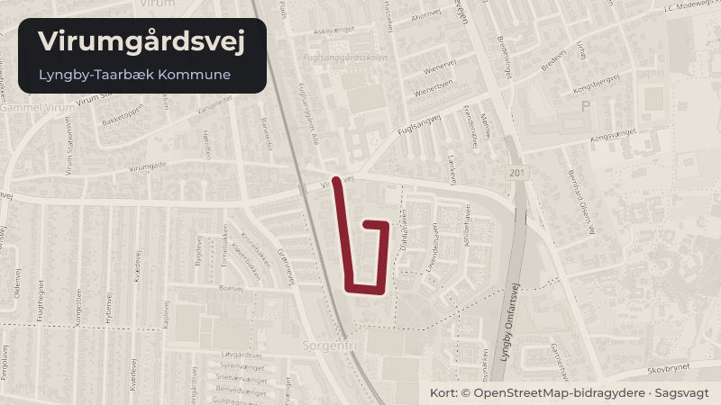

Besluttet 18. august, Teknik- og Miljøudvalget, Lyngby-Taarbæk
Virumgårdsvej 21 - Tidsbegrænset opstilling af interimsvarmecontainere
I forbindelse med udrulning af fjernvarmen i Lyngby-Taarbæk Kommune er der behov for en lokal produktion til at forsyne det udlagte ledningsnet.
Bydele i sagen: Taarbæk · Virum
Steder i sagen: Virumgårdsvej

Kort fortalt
- Hvem
- Teknik- og Miljøudvalget, Lyngby-Taarbæk Kommune
- Hvornår
- Tirsdag 18. august 2026
- Status
- Besluttet. Ad 2) Godkendt, idet udvalget ønsker at blive informeret løbende, at følgegruppen orienteres, og forvaltningen vender tilbage såfremt støjgrænsen ikke overholdes.
- Næste skridt
- Hvis forvaltningen bemyndiges til at give dispensation til opstilling af containerne i en tidsbegrænset periode, vil der samtidig blive arbejdet videre med byggetilladelse og VVM screening.
Læs hele sagen Kommunens egen tekst
Indstilling
Forvaltningen foreslår, at
1. der gives dispensation fra lokalplan 253 til opstilling af de tidsbegrænsede containere til
interimsvarmecentraler.
2. der gives dispensation fra skovbyggelinjen.
Problemstilling
Behovet for ny lokalproduktion af fjernvarme er forudsætningen for, at udrulningen af
fjernvarme som beskrevet i Varmeplan 2022-2030 kan lykkes. I den strategiske energiplan,
som Varmeplan 2022-2030 er en del af, beskrives behovet for ny lokal produktion, herunder
etablering af større varmepumper og elkedler. Med den nuværende produktion og udlagte
fjernvarmenet, kan der på nuværende tidspunkt ikke sikres en tilstrækkelig forsyning i
spidsbelastningen i vinterperioden i Virum-Sorgenfri området angivet i varmeplanen, da
Vestforbrænding ikke har fået etableret en permanent energicentral.
Vestforbrænding ønsker derfor at opstille en interimsvarmecentral, bestående af to
skibscontainere som kan sikre den fornødne forsyning i spidsbelastningen. Containerne
opstilles i en tidsbegrænset periode på tre år, hvor det forventes, at Vestforbrænding har
etableret en energicentral. Containerne har hver en dimension på 2,44 x 6,06 x 2,89 (BxLxH)
og opføres med en skorsten på 13 m over terræn.
Opstillingen forudsætter dispensation fra § 8.1 i "Lokalplan 253 Et erhvervsområde på
Virumgårdsvej med tillæg 1 til Lokalplan 253". Der kan meddelelses dispensation fra
bestemmelserne i en lokalplan, jf. planlovens § 19, stk. 1., såfremt dispensationen ikke er i strid
med lokalplanens formål eller tidsbegrænses til maksimalt tre år.
Opstilling af containerne
§ 8.1 Fastlægger, at der langs lokalplanens afgrænsning mod øst udlægges et 6 m bredt areal,
som kun må anvendes til afskærmende beplantning. Arealet er vist på bilag 2 i Lokalplan 253.
Derudover er området omfattet af en skovbyggelinje rundt om skoven på arealet "Grønningen",
matr. 9mb, Virum By, Lyngby-Taarbæk Kommune. Der kan gives dispensation fra
skovbyggelinjen jf. naturbeskyttelseslovens §65, stk. 1.
Løsninger
Forvaltningens vurdering
Det er forvaltningens vurdering, at der kan meddeles dispensation fra lokalplanen til det
ansøgte, da der er tale om en midlertidig løsning, der skal sikre varmeforsyningen af
fjernvarmenettet i Virum-Sorgenfri området, og idet de opstilles i en begrænset periode på
maksimalt tre år. Der lægges desuden vægt på, at containerne placeres på et vejareal ved en
parkeringsplads, og til dels er afskærmet af den eksisterende randbeplantning i lokalplanens
afgrænsning, hvorfor det er en hensigtsmæssig placering til et midlertidigt anlæg.
Endvidere vurderer forvaltningen, at skovbrynet ikke bliver påvirket som landskabeligt element
eller påvirke skovbrynets funktion som levested for plante- og dyrearter, hvorfor forvaltningen
vurderer, at der vil kunne gives dispensation fra skovbyggelinjen.
Forvaltningen gør opmærksom på, at såfremt der ikke findes en placering til interimsvarme, vil
borgere kunne opleve, at deres bolig ikke kan opvarmes tilstrækkeligt i vinterperioden.
Strategisk ramme
Fjernvarmeanlæggene etableres for at understøtte den fjernvarmeudrulning som er indeholdt i
kommunens Varmeplan 2022-2030. Udrulning af fjernvarme er afgørende for, at LyngbyTaarbæk Kommune kan nå målet om en CO2 reduktion på 90% i 2030, som forudsat i den
vedtagne DK2020 klimaplan.
Videre proces
Hvis forvaltningen bemyndiges til at give dispensation til opstilling af containerne i en
tidsbegrænset periode, vil der samtidig blive arbejdet videre med byggetilladelse og VVM
screening.
Økonomi
Sagen har ingen bevillingsmæssige konsekvenser.
Beslutningskompetence
Byplanudvalget beslutter pkt. 1.
Teknik- og Miljøudvalget beslutter pkt. 2.
Beslutning
Ad 2) Godkendt, idet udvalget ønsker at blive informeret løbende, at følgegruppen orienteres,
og forvaltningen vender tilbage såfremt støjgrænsen ikke overholdes.
Kilde: Lyngby-Taarbæk Kommune, Teknik- og Miljøudvalget, referat fra mødet tirsdag 18. august 2026, punkt 8. Læs den originale sag hos kommunen.